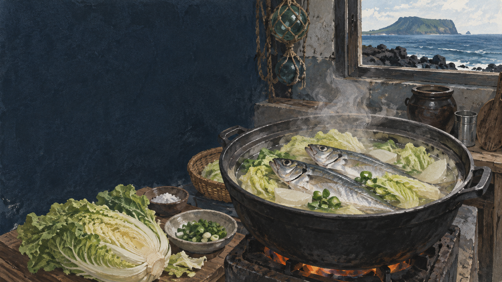

전갱이구이
직접 불에 구워 껍질과 지방의 고소함을 살립니다.
 제주에서는 이 재료를
제주에서는 이 재료를
각재기국의 생활문화를 바탕으로 제작한 기록화 · 생성 이미지
‘각재기’는 제주에서 전갱이를 가리키는 생활어입니다. 갓 잡은 전갱이의 적당한 지방과 감칠맛이 국물에 우러나고, 큼직한 배추가 단맛을 보태면 된장이나 고춧가루를 많이 쓰지 않아도 맛의 중심이 생깁니다.
손질이 부족하면 비린 향이 먼저 납니다. 아가미와 내장, 핏물을 깨끗이 제거하고 신선한 생선을 쓰는 일이 담백한 국의 가장 중요한 양념입니다.
각재기국은 재료가 단순한 만큼 손질과 끓이는 순서가 그대로 드러나는 음식입니다.
제주 연안의 어황과 계절에 따라 크기와 지방이 달라집니다.
쓴맛과 비린 향이 남지 않도록 아가미와 내장을 뺍니다.
배 속과 뼈 주변의 핏물을 흐르는 물에 정리합니다.
큼직한 배추가 생선 기름을 받아 달큰해집니다.
소금, 된장, 풋고추를 쓰는 정도는 가정마다 다릅니다.
표준 생물명 ‘전갱이’와 제주 생활어 ‘각재기’가 함께 쓰입니다. 크기나 마을에 따라 다른 이름이 덧붙을 수 있으므로 구술을 기록할 때는 화자의 지역과 세대를 함께 남기는 편이 좋습니다.
직접 불에 구워 껍질과 지방의 고소함을 살립니다.
선도와 위생 관리가 핵심이며 탄력 있는 살을 봅니다.
배추의 단맛과 생선의 기름이 맑은 국물에서 만납니다.
소금 중심, 된장·고추는 집집마다
처음 먹는 손님을 위해 간과 향을 조절
그날 구한 크기와 양에 맞춰 사용
1인분에 맞춘 일정한 크기와 구성
익숙한 일상 반찬이자 국
제주어 이름부터 배우는 향토음식
전갱이의 제철은 해황과 수온, 어장 형성에 따라 달라질 수 있습니다. 생선의 크기와 지방, 배추의 계절감까지 그날의 재료로 읽는 국이 각재기국입니다.
강한 향신료로 덮기보다 아가미·내장·핏물을 깨끗이 제거하고 오래 끓이지 않는 것이 먼저입니다. 가정마다 된장이나 풋고추를 더하는 이유도 그 집의 선호와 재료 상태에 따라 다릅니다.
공공기관·연구기관의 원문을 우선했습니다. 링크와 문서 내용은 2026년 9월 확인했습니다.